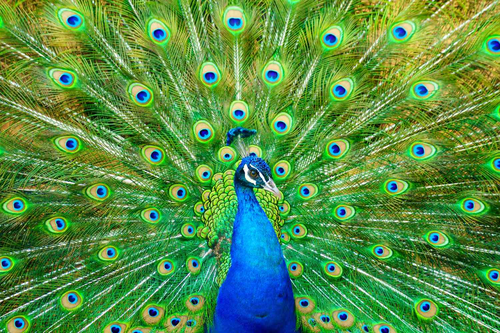

Peacocks are one of the most beautiful birds they are known for the vibrant and colorful tail feathers, which they fan out and display to attract mates. The male is called a "peacock", while the female is referred to as a "peahen". If you aren't sure on which it is then they are known as peafowl. They are native to South Asia, mainly in India and Sri Lanka, peafowl are admired for their beauty and have been symbolically significant due to their beauty. While the males are known for their colorful and vibrant plumage, females have more subdued colors which alllow them to blend into their surroundings and protect their nests. Peafowl are social birds that can often be found in groups.
